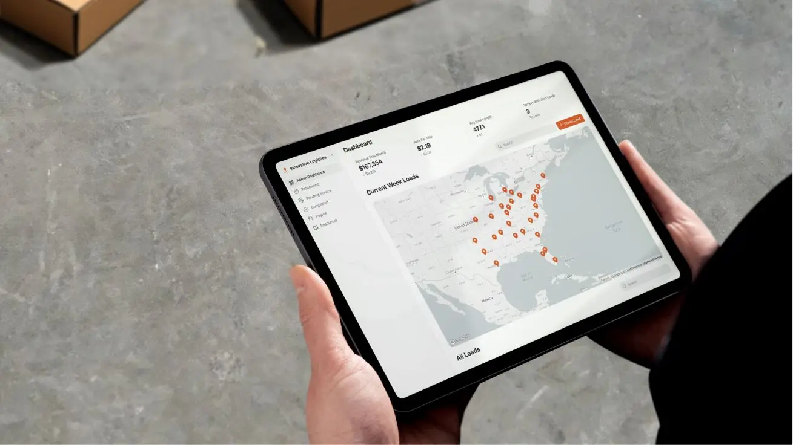

Mail & inbox
tickets, leads, questions
AI implementation studio
AI workflows that actually get used.
SwiftBuild maps manual workflows, builds AI automation and internal tools, connects them to your systems and measures the effect in daily operations.
Workflow audit
swiftbuild.agency
Input
CRM & order data
customer, status, history
Documents
PDFs, rules, agreements
AI orchestration
classify, reason, route
Policy
Memory
Tools
Output
Ticket created
priority: high
Human review
fallback + approval
Impact measured
time, quality, adoption
01
18 h/week
identified time
02
Human in loop
control points
03
Better follow-up
nothing disappears between systems
Built with real operators
Logistics, care, registries, fintech and automotive retail. Fruktkuriren
orders, deviations, operations
Fruktkuriren
orders, deviations, operations
 Omsorgskollen
structure, documentation, follow-up
Omsorgskollen
structure, documentation, follow-up
 TrustLedger
data, control, automation
TrustLedger
data, control, automation
 Familjehemsregistret
registries, verification, internal tools
Familjehemsregistret
registries, verification, internal tools
 Stenmark Bil
customer flows, CRM, admin
Stenmark Bil
customer flows, CRM, admin
Start where the friction lives
An audit should find the workflow worth automating first.
AI gets expensive when you start with technology instead of process. We start with recurring work where data already exists, ownership can be defined and the effect can be measured.
Audit canvas
Priority
01
Manual admin
high volume
02
Support & inbox
quick wins
03
Reporting
clear ROI
04
CRM & leads
more pipeline
The problem we solve
Most AI pilots die between demo and deployment.
The tools do not talk to each other
Data sits in CRM, inboxes, spreadsheets, order flows and documents without one shared operating process.
The team gets yet another system
The AI becomes a separate surface instead of helping inside the workflow people already use.
No one owns quality
Without logging, fallback and human control, the solution becomes difficult to trust.
What we implement
AI, automation and internal tools around your real processes.

Automated operations desk
A shared view for incoming work, open tasks, documents, approvals and reporting.

Internal tools people use
Dashboards, forms and mobile views that sit close to the daily workflow.

Workflow components
Approval cards, status views and action panels that make AI output usable.
Support automation
From messy inbox to prioritized tickets.
The AI reads incoming messages, matches them against routines, drafts replies and creates a clear ticket for the team.
Input
AI decision
Action
Method
From mapping to measurable impact, without losing control.
Each step unlocks the next. We start in the real workflow, build narrow, connect to the systems and measure until the flow becomes a team habit.

Workflow mapping
We review the process, systems, data, decisions and where the team loses time.
Pilot design
We choose one workflow slice with clear input, expected output, business value, owner and success metric.
Implementation
We build automation, AI logic, integrations and the internal views the team needs.
Training & handover
The team gets routines, documentation, control points and a simple path for improvement.
Measurement
We track time saved, errors reduced, response time, adoption and what the next workflow should be.
Proof
Built close to operations where details matter.
SwiftBuild has experience with workflows across logistics, care, registries, sales, finance and internal tools. The point is not another AI demo, but a system the team can use on Monday.
Fruktkuriren
orders, deviations, operations
Omsorgskollen
structure, documentation, follow-up
TrustLedger
data, control, automation
Familjehemsregistret
registries, verification, internal tools
Stenmark Bil
customer flows, CRM, admin

Controlled implementation
AI needs points of responsibility, not just automation.
Human-in-the-loop where decisions need review.
Logs that show what the AI did and why.
Fallback routines when data is missing or confidence is low.
Documentation so the team can own the flow after delivery.
FAQ
The practical details before we start.
What happens in an AI workflow audit?
We look at where your team loses time, choose one workflow to improve and define exactly what AI should do.
Do we need to replace our systems?
Usually not. The point is to connect AI and automation to your existing tools where possible.
What do we need before starting?
A workflow worth improving, access to the relevant systems or exports, and someone who understands how the work is done today.
How quickly can we see something concrete?
Usually the first step is a small pilot around one workflow, so you can see whether it saves time before expanding.
Next step
Book an AI workflow audit.
Send a short note about the workflow that takes the most time today. We will reply with the next step and what would be reasonable to automate first.
info@swiftbuild.agency